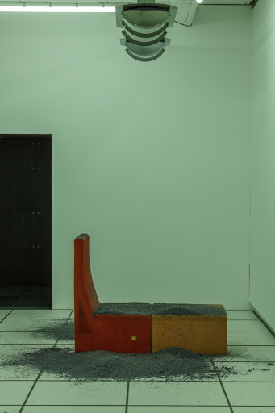

4. December, 2019. “Year without summer (Panton’s Diversion)” (2017) by Dora Budor is a distilled environment wherein artificial ash falls from the ceiling onto Verner Panton’s 1965 design series ‘Wohnlandschaft’. The title alludes to the year of 1816, known as “the year without summer”-- the ‘nuclear winter’ which led to massive death tolls across the Northern Hemisphere, caused by the largest known volcanic eruption of 1,300 years. Meanwhile, high levels of ash in the atmosphere led to unusually spectacular sunsets. Such force demonstrates the subliming violence of nature. In 1816 it starved children, and JMW Turner discovered his oeuvre.
Ash signifies that distant threat. In the historic incident of Pompeii it was at once the preserver of intellectual beauty and the hand of death: halting and elongating the chronological order of time. Atop ‘Wohnlandschaft’, it marks the constant metamorphoses of visual histories. Ash serves as an indicator of the cycle of erasure in which Panton’s 'futurism' is taken from utility and placed into history: out of Bauhausian living rooms and into the sterile vacuum of climate-controlled design archives. Design is agentless in the reification of new modernities. Yet ash is an agent-- a speculative driver in the displacement of history.
